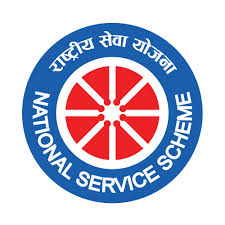

N.S.S. Regular Programme

NATIONAL SERVICE SCHEME
(Report Of Regular Activities 2014 - 15)
Yet another academic session flows past vibrant with cultivation of the spirit and practice of social service through NSS activities in the College. Yet another year has come inspiring young blood to gain skills and participate in social service. Developing on the experiences and achievements accumulating from 2008, Jogesh Chandra Chaudhuri College – NSS team of ever zealous volunteers and Programme Officers of four Units, under the leadership of Respected Teacher-in-Charge, Prof. Durgadas Bhattacharya, has been able to conduct meaningful programmes trying to materialise the ideals of Swami Vivekananda’s ideals of personality development through social service.
This report humbly sets forth their achievements in the academic session in this report. Following are certain salient features and achievements of the year-long activities:
- Introductory Orientation programme 13th August, 2014
- NSS Voluteers meet assigning duties to the volunteers 10th September, 2014
- Awareness programme on AIDS and celebration of Chicago day 11th September, 2014
- Thalasemia Detection Camp 13th September 2014
- Visit to Orphan house of Ramkrishna Ashram, Moinagarh with NSS volunteers 14th November, 2014
- Awareness programme on Womens protection by Swayam 9th December, 2014
- Physical training workshop on self protection of women 18th December 2014
- A camp for Polio Vaccination by NSS 18th January, 2015
- An Eye Camp by Titan Eye organised by NSS 20th January 2015
- Yoga divas by University of Calcutta NSS dept 21st June, 2015
ELABORATION OF ACTIVITIES
(i) N.S.S. Inaugural Program for new volunteers – 13th August, 2014
This was a mandatory programme for all freshers where they were briefed about National Service Scheme, its motto, activities and especially the activities and history of the 4 NSS Units of the College. The Teacher-in-Charge and Programme Officers motivated the new students to join NSS and a short videos presentations were made to brief NSS activities of the College. Senior volunteers shared their experiences and membership forms were distributed for fresh joining. The program Schedule was as below
[ANCHORING : Dr MAHANANDA KANJILAL]
- OPENING SONG – N.S.S. SONG BY N.S.S. CHOIR (C.U.)…………………………….......... 5MINS
- FELICITATION OF CHOIR BY HONB’LE TEACHER-IN-CHARGE…………………….............. 2MINS
- WELCOME TO N.S.S. BY HONB’LE TEACHER-IN-CHARGE, PROF DURGADAS BHATTACHARYYA…………………………………………………………………………………….....................5MINS
- ABOUT N.S.S.(SHORT HISTORY, PURPOSE, NSS LOGO, ETC) BY FORMER SECRETARY, N.S.S., JC.C. COLLEGE & WINNER OF BEST FEMALE PROGRAMME OFFICER (DISTRICT V), PROF. MAMATA RANJAN TRIVEDI……………….................................................................10MINS
- N.S.S Clap (training with the help of N.S.S. senior volunteers) LED BY Dr. DEBAJYOTI DAS GUPTA……………………………………………………………………………........................................ 5MINS
- Speech for MOTIVATION to NSS volunteers BY FORMER SECRETARY, N.S.S., J.C.C.COLLEGE by Dr. Jaydeep Sarangi ...............................................................10 Mints
- LEADERSHIP TRAINING BY FORMER PROGRAMME OFFICER, NS.S. UNIT III, PROF. ANGANA DUTTA…………………………………………………………………................................………………….. 10MINS
- Speech by Dr. S. K. Dutta Chaudhury 10 MINS
- NATIONAL ANTHEM
ii) NSS Orientation Programme on 10th September
It is pleasured to report that Jogesh Chandra Chaudhuri College had organized ‘NSS ORIENTATION PROGRAMME 2014” for NSS volunteers Batch 2014 at JCC College Hall on 10th September 2014. Our former NSS Secretaries Prof Mamata Ranjan Trivedi (best Female Program Officer), Department of Hindi and Prof Dr. Jaydeep Sarangi (best Male Program Officer), Department of English encouraged more to our out going volunteers for social work so that they can make them perfect human beings which is the dream of Mahatma Gandhi and Swami Vivekananda. Prof. Angana Dutta, former best female program officer gave a mind blowing speech. The program ended with National Anthem.
iii) AIDS Awareness programme and Chicago Day Programme
On 11th September NSS organised a programme on AIDS. Smt Jayanti Ghosh Roy delivered a lecture on awareness about AIDS. A power point presentation was shown showing some case studies on AIDS. The programme ended with an interactive session with NSS volunteers and NSS officers.
The day was also famous as Chicago Day since at that date Swami Vivekananda Delivered Speech at Chicago. We also celebrated the event from NSS. Prof. Sima Mukherjee, Prof. Angana Dutta and Dr. Jaydip Sarangee delivered speeches on Swami Vivekananda.
The department of Journalism displayed a poster on this event.
iv) Awareness program of Thalassaemia, Screening and Detection of the disease
As we all know Thalassaemia is a dreadful disease where prevention is the only method through which we can prevent & control this disease. As per government instruction Thalassaemia Control Units are doing population screening in different institutions and locality. So NSS Units of our college arranged a program regarding Thalassaemia awareness and screening with the help of Thalassaemia Control Unit, Calcutta School of Tropical Medicine on 13th September, 2014. A team came our college and told what thalassaemia is. An interactive session was made between NSS volunteers and Medical Team. Then they collected blood samples from 86 interested NSS volunteers, student, Teachers, non-teaching staffs for screening. At the end of the program, A group photograph was made and they assured us to deliver the reports very soon with confidential.
v) On 14th November, 2014 NSS officers of Jogesh Chandra Chaudhuri college visited Orphan house of Ramkrishna asram of Moina garh with 50 volunteeers. Our NSS volunteers interacted with Orphan children and stationary gifts were provided to them.
vi) On 9th December ,2014 NSS organised an awareness programme on Eve Teasing and self defence of women. SWAYAM conducted the programme. This organisation works for violence against women. Smt. Sima Srinivas and sutithi Bose delivered speeches on social aspect of eve teasing. Two short films produced by APNA TV were shown in the programme. These were followed by an interesting interactive session.
vii) A Basic Human Right self defense awareness workshop for women
We have organized a ‘Self Defense Awareness workshop’ for Women with NPO World Karate Organization Shinkyokushinkai India under the supervision of Shihan Shivaji Ganguly for girls and women of different age groups to make them aware of the basic self defense techniques at our College Hall on 18th December, 2014. We have planned this keeping in mind the present scenario of the society where our mothers and sisters are facing difficulties in their day life and are getting victimized at every step. In this workshop, Mr. Ganguly and his team provided self defense training to our NSS female volunteers.
viii) On 18th January 2015 NSS organised a camp for Polio Vaccination with Corporation . Children below 5 years of the locality came to have polio vaccination. NSS officers and volunteers worked together to make it successful.
ix) On 20th January 2015 NSS of Jogesh Chandra chaudhuri college organised an eye camp. Titan Eye conducted this camp. Eye chacking was done for teachers, students, and nonteaching members of the college.
x) On 21st June, 2015 NSS officers and volunteers joined in the programme: International Day of Yoga organised by the University of Calcutta. Lecture demonstration was organised emphasizing the benefits of yoga for health and mind. Principal of Belur Ramkrishna college gave a motivating speech on yoga. The venue of the programme was Calcutta Rowing Club.
Acknowledgement:
NSS Unit-I thanks Swayam, A team of School of Topical Medicine, Lake gardens Women and Children Development Centre, Shinkyokushinkai India, Biggan Mancha, Indian Institute of Training and Development, TORC, Narendrapur; Institute of Psychological & Educational Research [IPER] for their assistance in the programs to make success. The Unit also would like to thanks our Teacher-in-Charge, Prof Durgadas Bhattacharyya, teachers, Non-Teaching staffs and student Union for their yearlong support in all programs in NSS. We are also thankful to the Kolkata Police of Charu market and Purba Jadavpur police station for their great assistance during running the rally in special camp on the road. The NSS Unit express their thanks to University of Calcuttaand Ministry of Youth Affairs for guidance and the financial support.
ADVISORY COMMITTEE, NSS (SESSION 2014-15)
(i) Prof. Durgadas Bhattacharyya (Teacher-in-Charge)
(ii) Dr. Mahananda Kanjilal (Program Officer, Unit-I)
(iii) Dr. Debajyoti Dasgupta (Program Officer, Unit-II)
(iv) Dr. Avijit Saha (Program Officer, Unit-III & Secretary)
(v) Prof. Debashis Ray (Program Officer, Unit-IV)
(vi) Prof Mamata Trivedi(Former Program Officer)
(vii) Prof. Angana Dutta (Former Program Officer)
(viii) Smt Bijli Mallick (Director, Institute of Psychological & Educational Research [IPER], Kolkata)
(ix) Swati (Student Representative)
(x) Swarnavo Chakraborty (Student Representative)